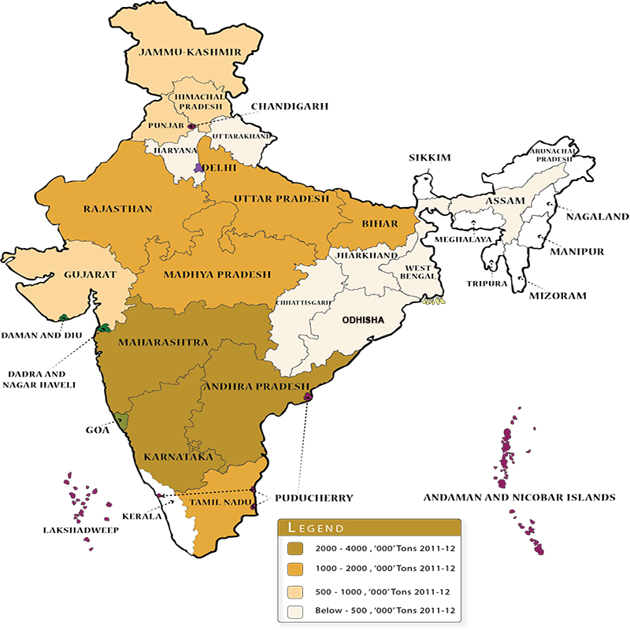

AGRICULTURE DEPARTMENT
AGRICULTURE DEPARTMENT
About Corns:-
Maize (Zea mays L) is one of the most versatile emerging crops having wider adaptability under varied agro-climatic conditions. Globally, maize is known as queen of cereals because it has the highest genetic yield potential among the cereals. It is cultivated on nearly 150 m ha in about 160 countries having wider diversity of soil, climate, biodiversity and management practices that contributes 36 % (782 m t) in the global grain production. The United States of America (USA) is the largest producer of maize contributes nearly 35 % of the total production in the world and maize is the driver of the US economy. The USA has the highest productivity (> 9.6 t ha-1 ) which is double than the global average (4.92 t ha-1).
Whereas, the average productivity in India is 2.43 t ha-1In India, maize is the third most important food crops after rice and wheat. According to advance estimate its production is likely to be 22.23 M Tonnes (2012-13) mainly during Kharif season which covers 80% area. Maize in India, contributes nearly 9 % in the national food basket. In addition to staple food for human being and quality feed for animals, maize serves as a basic raw material as an ingredient to thousands of industrial products that includes starch, oil, protein, alcoholic beverages, food sweeteners, pharmaceutical, cosmetic, film, textile, gum, package and paper industries etc.The maize is cultivated throughout the year in all states of the country for various purposes including grain, fodder, green cobs, sweet corn, baby corn, pop corn in peri-urban areas. The predominant maize growing states that contributes more than 80 % of the total maize production are Andhra Pradesh (20.9 %), Karnataka (16.5 %), Rajasthan (9.9 %), Maharashtra (9.1 %), Bihar (8.9 %), Uttar Pradesh (6.1 %), Madhya Pradesh (5.7 %), Himachal Pradesh (4.4 %). Apart from these states maize is also grown in Jammu and Kashmir and North-Eastern states. Hence, the maize has emerged as important crop in the non-traditional regions i.e. peninsular India as the state like Andhra Pradesh which ranks 5th in area (0.79 m ha) has recorded the highest production (4.14 m t) and productivity (5.26 t ha-1 ) in the country although the productivity in some of the districts of Andhra Pradesh is more or equal to the USA
.
Maize can be grown successfully in variety of soils ranging from loamy sand to clay loam. However, soils with good organic matter content having high water holding capacity with neutral pH are considered good for higher productivity. Being a sensitive crop to moisture stress particularly excess soil moisture and salinity stresses; it is desirable to avoid low lying fields having poor drainage and also the field having higher salinity. Therefore, the fields having provision of proper drainage should be selected for cultivation of maize.All India Coordinated Research Project (AICRP) on maize was launched in 1957 with the objective to develop and disseminate genetically superior cultivars and production/protection technologies. AICRP organizes interdisciplinary, interinstitutional, co-operative and systematic testing of newly developed cultivars of both public and private sectors for different agro-climatic zones of the country. The project resulted in refining efforts in varietal improvement. Since 1961, a total number of 187 cultivars including single cross hybrids, composites and multiple parent crosses have been released nationwide. In India, maize is traditionally grown in monsoon (Kharif) season, which is accompanied by high temperature (<35° C) and rainfall. However, with the development of new cultivars and appropriate production technology, winter cultivation of maize has emerged as a viable alternative.
